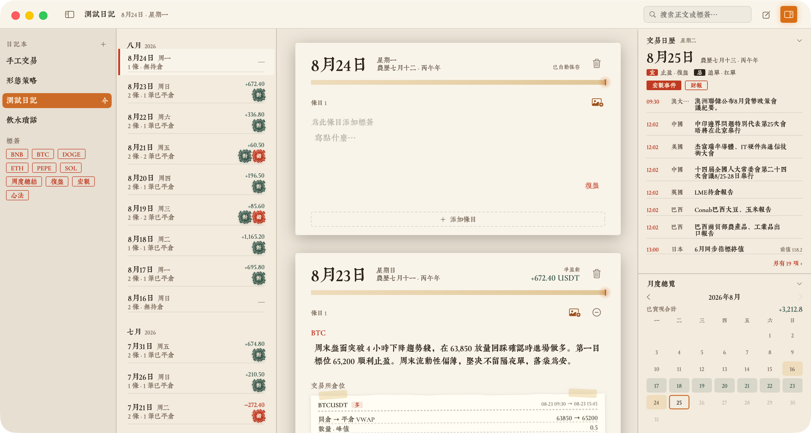
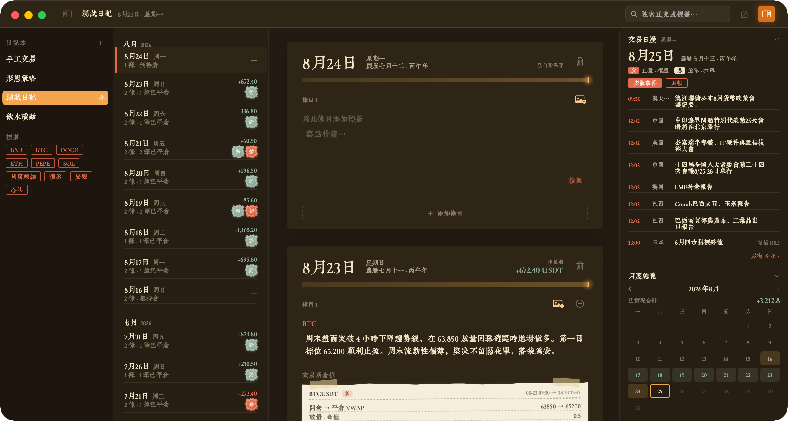
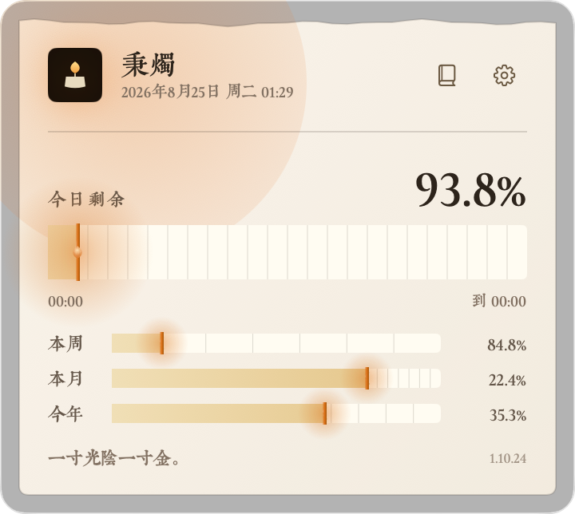
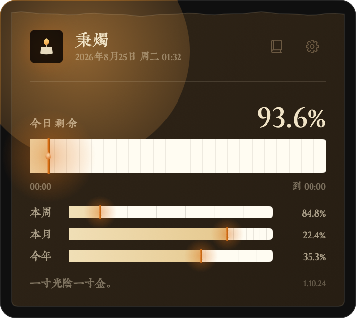
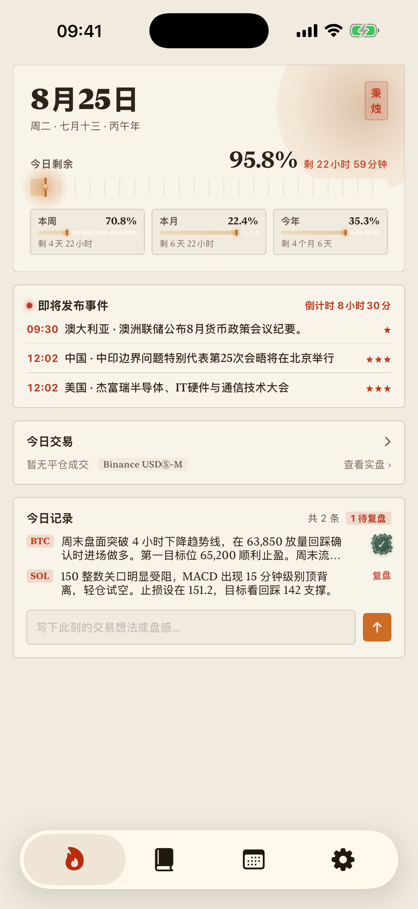
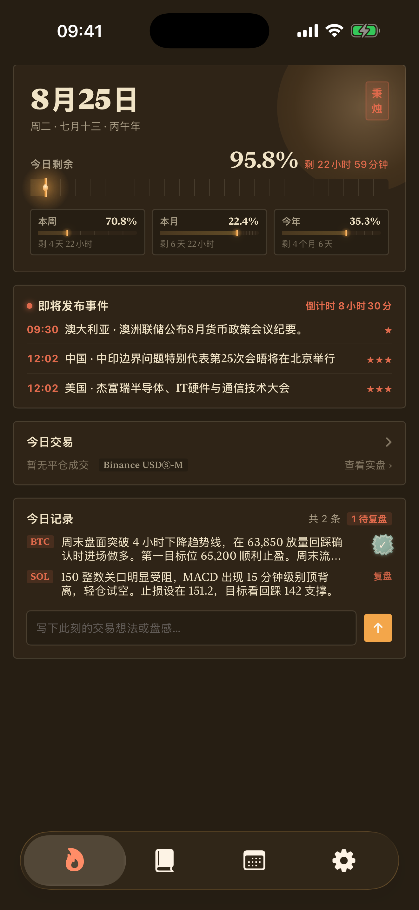

01
它做什么
What it does时间刻度
时光匆匆，只争朝夕，日 / 周 / 月 / 年的此刻剩余与结束时刻，电脑和手机同时在线，随时随地，一撇了然。
纸上日记
一天一页，条目带标签与图片；复盘印章、条目级检索、每日提醒、导入导出。还有多日记本，可选 Dropbox 同步。
撕页黄历
当日的全球重大宏观事件与财报信息一页览尽，甚至还附赠拥有物理撕页效果的黄历彩蛋，当然也可以不让它们打扰你。
仓位单据
只读连接 Binance / OKX / Hyperliquid 等交易所，成交自动聚合成仓位，贴上当日日记。凭据只存本机，从不上传。
02
界面截图
Screenshots





03
下载
Download
本地存储 · 只读同步 · 开源透明
昼短苦夜长，何不秉烛游
今天的交易今天复盘，明天做明天的交易。把时间刻度、宏观事件与交易历史，收进你的 Mac 菜单栏。